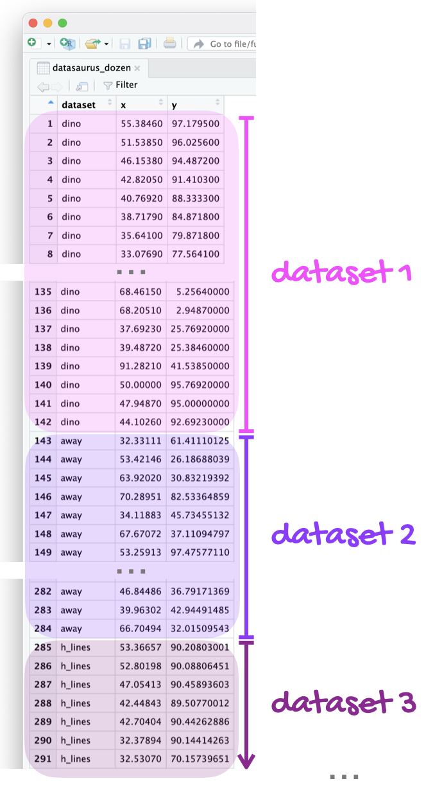
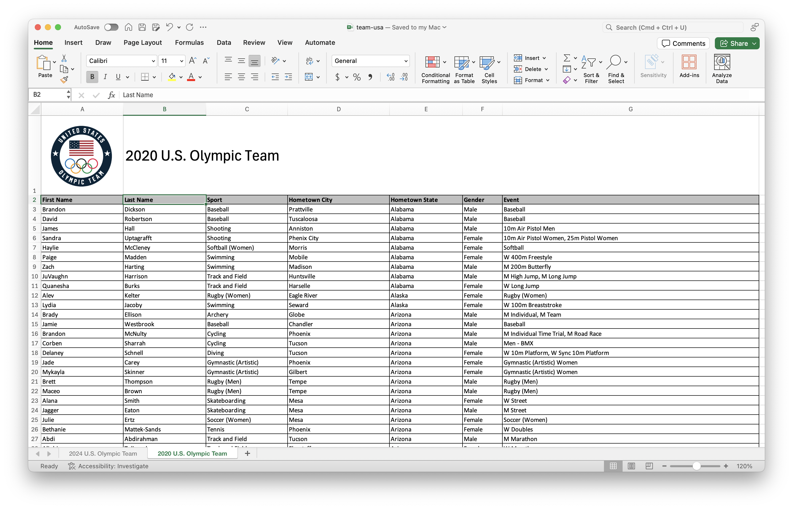
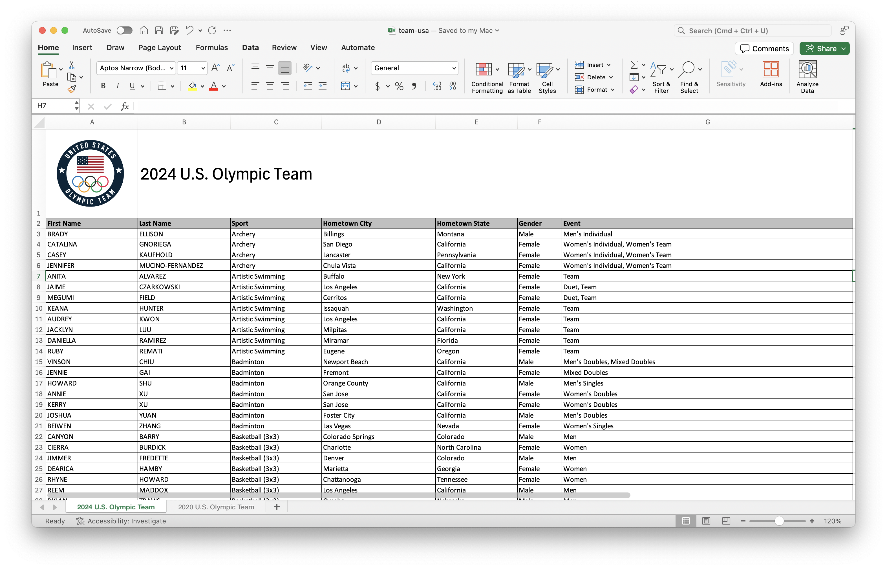

Warning: package 'ggplot2' was built under R version 4.5.2HW 4
Everything so far
HW
Due: Wed, Feb 18, 11:59 pm
Introduction
This is a two-part homework assignment:
Part 1 – 🤖 Feedback from AI: Not graded, for practice, you get immediate feedback with AI, based on rubrics designed by the course instructor. Complete in
hw-4-part-1.qmd, no submission required.Part 2 – 🧑🏽🏫 Feedback from Humans: Graded, you get feedback from the course instructional team within a week. Complete in
hw-4-part-2.qmd, submit on Gradescope.
By now you should be familiar with how to get started with a homework assignment by cloning the GitHub repo for the assignment.
Click to expand if you need a refresher on how to get started with a homework assignment.
- Go to https://cmgr.oit.duke.edu/containers and login with your Duke NetID and Password.
- Click
STA199under My reservations to log into your container. You should now see the RStudio environment. - Go to the course organization at github.com/sta199-s26 organization on GitHub. Click on the repo with the prefix hw-4. It contains the starter documents you need to complete the homework.
- Click on the green CODE button, select Use SSH. Click on the clipboard icon to copy the repo URL.
- In RStudio, go to File ➛ New Project ➛Version Control ➛ Git.
- Copy and paste the URL of your assignment repo into the dialog box Repository URL. Again, please make sure to have SSH highlighted under Clone when you copy the address.
- Click Create Project, and the files from your GitHub repo will be displayed in the Files pane in RStudio.
By now you should also be familiar with guidelines for formatting your code and plots as well as your Git and Gradescope workflow.
Click to expand if you need a refresher on assignment guidelines.
Code
Code should follow the tidyverse style. Particularly,
- there should be spaces before and line breaks after each
+when building aggplot, - there should also be spaces before and line breaks after each
|>in a data transformation pipeline, - code should be properly indented,
- there should be spaces around
=signs and spaces after commas.
Additionally, all code should be visible in the PDF output, i.e., should not run off the page on the PDF. Long lines that run off the page should be split across multiple lines with line breaks.
Plots
- Plots should have an informative title and, if needed, also a subtitle.
- Axes and legends should be labeled with both the variable name and its units (if applicable).
- Careful consideration should be given to aesthetic choices.
Workflow
Continuing to develop a sound workflow for reproducible data analysis is important as you complete the lab and other assignments in this course.
- You should have at least 3 commits with meaningful commit messages by the end of the assignment.
- Final versions of both your
.qmdfile and the rendered PDF should be pushed to GitHub.
Part 1 – Feedback from AI
Your answers to the questions in this part should go in the file hw-4-part-1.qmd.
Instructions
Write your answer to each question in the appropriate section of the hw-4-part-1.qmd file. Then, highlight your answer to a question, click on Addins > AIFEEDR > Get feedback. In the app that opens, select the appropriate homework number (4) and question number. Then click on Get Feedback. Please be patient, feedback generation can take a few seconds. Once you read the feedback, you can go back to your Quarto document to improve your answer based on the feedback. You will then need to click the red X on the top left corner of the Viewer pane to stop the feedback app from running before you can re-render your Quarto document.
Click to expand if you want to review the video that demonstrates how to use the AI feedback tool.
Packages
In this part you will work with the
- tidyverse package for doing data analysis in a “tidy” way and
- datasauRus package for a dataset.
Do not forget to render, commit, and push regularly, after each substantial change to your document (e.g., after answering each question). Use succinct and informative commit messages. Make sure to commit and push all changed files so that your Git pane is empty afterward.
datasauRus!
Question 1
The data frame you will be working with for this question is called datasaurus_dozen and it’s in the datasauRus package. This single data frame contains 13 datasets, designed to show us why data visualization is important and how summary statistics alone can be misleading. The different datasets are marked by the dataset variable, as shown in Figure 1.

Note
If it’s confusing that the data frame is called datasaurus_dozen when it contains 13 datasets, you’re not alone! Have you heard of a baker’s dozen?
Here is a peek at the top 10 rows of the dataset:
datasaurus_dozen# A tibble: 1,846 × 3
dataset x y
<chr> <dbl> <dbl>
1 dino 55.4 97.2
2 dino 51.5 96.0
3 dino 46.2 94.5
4 dino 42.8 91.4
5 dino 40.8 88.3
6 dino 38.7 84.9
7 dino 35.6 79.9
8 dino 33.1 77.6
9 dino 29.0 74.5
10 dino 26.2 71.4
# ℹ 1,836 more rows- In a single pipeline, calculate the mean of
x, mean ofy, standard deviation ofx, standard deviation ofy, and the correlation betweenxandyfor each level of thedatasetvariable. Then, in 1-2 sentences, comment on how these summary statistics compare across groups (datasets).
Tip
There are 13 groups but tibbles only print out 10 rows by default. To display all rows, add print(n = 13) as the last step of your pipeline.
- Create a scatterplot of
yversusxand color and facet it bydataset. Then, in 1-2 sentences, how these plots compare across groups (datasets). How does your response in this question compare to your response to the previous question and what does this say about using visualizations and summary statistics when getting to know a dataset?
Tip
When you both color and facet by the same variable, you’ll end up with a redundant legend. Turn off the legend by adding show.legend = FALSE to the geom creating the legend.
Render, commit, and push your changes. Make sure that you commit and push all changed documents and that your Git pane is completely empty before proceeding.
Gapminder!
Question 2
Gapminder is a “fact tank” that uses publicly available world data to produce data visualizations and teaching resources on global development. We will use an excerpt of their data to explore relationships among world health metrics across countries and regions between the years 2000 and 2023. The data set is called gapminder and it’s in your lab repository’s data folder.
In this question you’ll prepare the dataset you’ll use in this part.
Read: Read the data and save it as an object called
gapminder_raw.Filter: For our analysis, we will only be working with data from 2023. Filter the data set so only values from the year 2023 are included. Save this data set as
gapminder_raw_23and use it for the remainder of this exercise and the following.Glimpse: Glimpse at
gapminder_raw_23and list the variables and their types. Comment on any unexpected features in the data.Clean: First, figure out why
gdp_percapis read in as a character variable and describe your findings in one sentence. Then, clean thegdp_percapvariable and convert it to numeric values. Save the resulting data frame asgapminder_23.
Question 3
This question relies on an earlier part of the assignment, where the gapminder dataframe is read in and transformed into gapminder23. We are interested in learning more about life expectancy in countries, and we’ll start by exploring the relationship between life expectancy and GDP.
- Create two visualizations:
Scatter plot of
life_expvs.gdp_percapScatter plot of
life_exp_logvs.gdp_percap, wherelife_exp_logis a new variable you add to the data set by taking the natural log oflife_exp.
- First describe the relationship between each pair of the variables. Then, comment on which relationship would be better modeled using a linear model, and explain your reasoning.
Part 2 – Feedback from Humans
Your answers to the questions in this part should go in the file hw-4-part-2.qmd.
Packages
In this part you will work with the
- tidyverse package for doing data analysis in a “tidy” way,
- readxl package for reading in Excel files,
- janitor package for cleaning up variable names, and
- palmerpenguins package for a dataset.
You may choose to load other packages as needed, particularly for improving your plots. If you do so, add the functions to load these packages in the code cell labeled load-packages-data.
Cars!
In Questions 4 and 5, you’ll work with one of the most basic and overused datasets in R: mtcars. The data in this dataset come from the 1974 Motor Trend US magazine (so, yes, they’re old!) and provide information on fuel efficiency and other car characteristics.
Question 4
Since the dataset is used in many code examples, it’s not unexpected that some analyses of the data are good and some not so much.
Tip
For both parts of this question, you should review the data dictionary that is in the documentation for the dataset which you can find at https://stat.ethz.ch/R-manual/R-devel/library/datasets/html/mtcars.html or by typing ?mtcars in your Console.
a. You come across the following visualization of these data. First, determine what is wrong with this visualization and describe it in one sentence (hint: it involves the am variable). Then, fix and improve the visualization. As part of your improvement, make sure your legend
- is on top of the plot,
- is informative, and
- lists levels in the order they appear in the plot (from left to right).
ggplot(mtcars, aes(x = wt, y = mpg, color = am)) +
geom_point() +
labs(
x = "Weight (1000 lbs)",
y = "Miles / gallon"
)
Tip
Your answer must include all of the above code. You should add to it to make improvements, not create a completely different plot.
b. Update your plot from part (a) further, this time using different shaped points for cars with V-shaped and straight engines. Once again, some requirements for your legend – it should be informative and moved to the right of the plot.
Question 5
Your task is to make your plot from Question 4b as ugly and as ineffective as possible. Like, seriously. I want something that is apocalyptically heinous, loathsome, and rotten. Change colors, axes, fonts, themes, or anything else you can think of. You can also search online for other themes, fonts, etc. that you want to tweak. The sky is truly the limit. I want Sauron, Voldemort, Cruella de Vil, Count Dracula, and Regina George all nodding in approval at how horrendous your plot is.
You must make at least 5 updates to the plot, and your answer must include:
a list of the at least 5 updates you’ve made to your plot from Question 4b, and
1-2 sentence explanation of why the plot you created is ugly (to you, at least) and ineffective.
Did I mention that the plot should be bad? A prize will be awarded for the worst submission, so get crackin’!
Tip
Render, commit, and push your changes. Make sure that you commit and push all changed documents and that your Git pane is completely empty before proceeding.
Olympics!
Data
For this part of your homework, you’ll work with data from the rosters of Team USA from the 2020 and 2024 Olympics. The data come from https://www.teamusa.com and the rosters for the two games are in a single Excel file (team-usa.xlsx in your data folder), accross two separate spreadsheets within that file. Figure 2 shows screenshots of these spreadsheets.


Your goal is to answer questions about athletes who competed in both games and only one of the games.
Question 6
- Read data from the two sheets of
team-usa.xlsxas two separate data frames calledteam_usa_2020andteam_usa_2024.
Tip
The names of the sheets are shown in the screenshots in Figure 2, or you can use the excel_sheets() function to discover them. Additionally, note that the first row of the sheets contain a logo and a title describing the contents of the data, and not the header row containing variable names.
Read the documentation for the
clean_names()function from the janitor package at https://sfirke.github.io/janitor/reference/clean_names.html. Use this function to “clean” the variable names ofteam_usa_2020andteam_usa_2024and save the data frames with the new variable names.-
Create a new variable in both of the datasets called
namethat:-
paste()s together thefirst_nameandlast_namevariables with a space in between and - is the first variable in the resulting data frame.
-
Using the appropriate
*_join()function, determine how many athletes participated in both Olympic Games?
Important
Your answer to this question, based on the data frames you created, should be 0, even if it doesn’t make sense in context of actual Olympic athletes.
Question 7
If you have even a passing knowledge of the Olympic Games, you might know that there are some athletes that participated in both the 2020 and 2024 games, e.g., Simone Biles, Katie Ledecky, etc.
- The reason why athlete names didn’t match across the two data frames is that in one data frame, names are in UPPER CASE, and in the other, they’re in Title Case. Update the 2020 data frame to make
nameall upper case. Display the first 10 rows ofteam_usa_2020with upper case names.
Important
Your answer must use the str_to_upper() function.
Let’s try that question again: How many athletes participated in both Olympic Games?
How many athletes participated in the 2020 Olympic Games but not the 2024 Olympic Games? How many athletes participated in the 2024 Olympic Games but not the 2020 Olympic Games?
Render, commit, and push your changes. Make sure that you commit and push all changed documents and that your Git pane is completely empty before proceeding.
Quarto!
Question 8
You have the following code chunk:
ggplot(penguins, aes(x = bill_length_mm, y = bill_depth_mm)) +
geom_point()Add the following code cell options, one at a time, and set each to false and then to true. After each value, render your document and observe its effect. Ultimately, choose the values that are the most appropriate for this code cell. Based on the behaviors you observe, describe what each code cell option does.
echowarningeval
Question 9
- You have the following code cell again.
ggplot(penguins, aes(x = bill_length_mm, y = bill_depth_mm)) +
geom_point()Add fig-width and fig-asp as code chunk options. Try setting fig-width to values between 1 and 10. Try setting fig-asp to values between 0.1 and 1. Re-render the document after each value and observe its effect. Ultimately, choose values that make the plot look visually pleasing in the rendered document. Based on the behavior you observe, describe what each chunk option does.
Tip
Now that you’ve had more practice with figure sizing in Quarto documents, review all of the plots you made in this lab and adjust their widths and aspect rations to improve how they look in your rendered document.
b. You have the following code cell, but look carefully, it’s not exactly the same!
gplot(penguins, aes(x = bill_length_mm, y = bill_depth_mm)) +
geom_point()Add error as a code chunk option and set it to false and then set it to true. After each value, render your document and observe its effect. Ultimately, choose the value that allows you to render your document without altering the code. Based on the behavior you observe, describe what this code chunk option does.
Tip
Reading the documentation might also be helpful.
Now is another good time to render, commit, and push your changes to GitHub with an informative and concise commit message. And once again, make sure to commit and push all changed files so that your Git pane is empty afterward. We keep repeating this because it’s important and because we see students forget to do this. So take a moment to make sure you’re practicing good version control habits.
Wrap-up
Warning
Before you wrap up the assignment, make sure that you render, commit, and push one final time so that the final versions of both your .qmd file and the rendered PDF are pushed to GitHub and your Git pane is empty. We will be checking these to make sure you have been practicing how to commit and push changes.
Submission
Submit your PDF document to Gradescope by the deadline to be considered “on time”:
- Go to http://www.gradescope.com and click Log in in the top right corner.
- Click School Credentials \(\rightarrow\) Duke NetID and log in using your NetID credentials.
- Click on your STA 199 course.
- Click on the assignment, and you’ll be prompted to submit it.
- Mark all the pages associated with question. All the pages of your homework should be associated with at least one question (i.e., should be “checked”).
Checklist
Make sure you have:
- attempted all questions
- rendered your Quarto document
- committed and pushed everything to your GitHub repository such that the Git pane in RStudio is empty
- uploaded your PDF to Gradescope
Grading and feedback
Questions 1 - 3 are not graded, but you should complete them to get practice.
-
Questions 4 - 9 are graded, and you will receive feedback on Gradescope from the course instructional team within a week.
- Questions will be graded for accuracy and completeness.
- Partial credit will be given where appropriate.
- There are also workflow points for:
- committing at least three times as you work through your homework,
- having your final version of
.qmdand.pdffiles in your GitHub repository, and - overall organization.